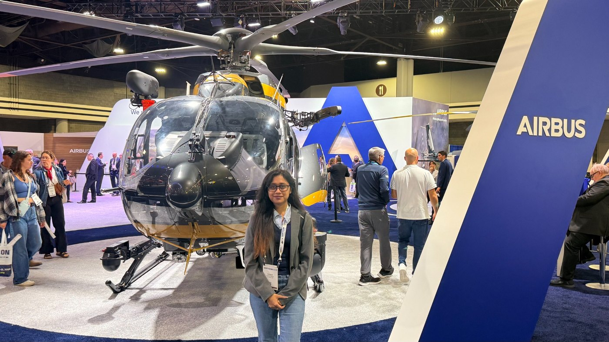
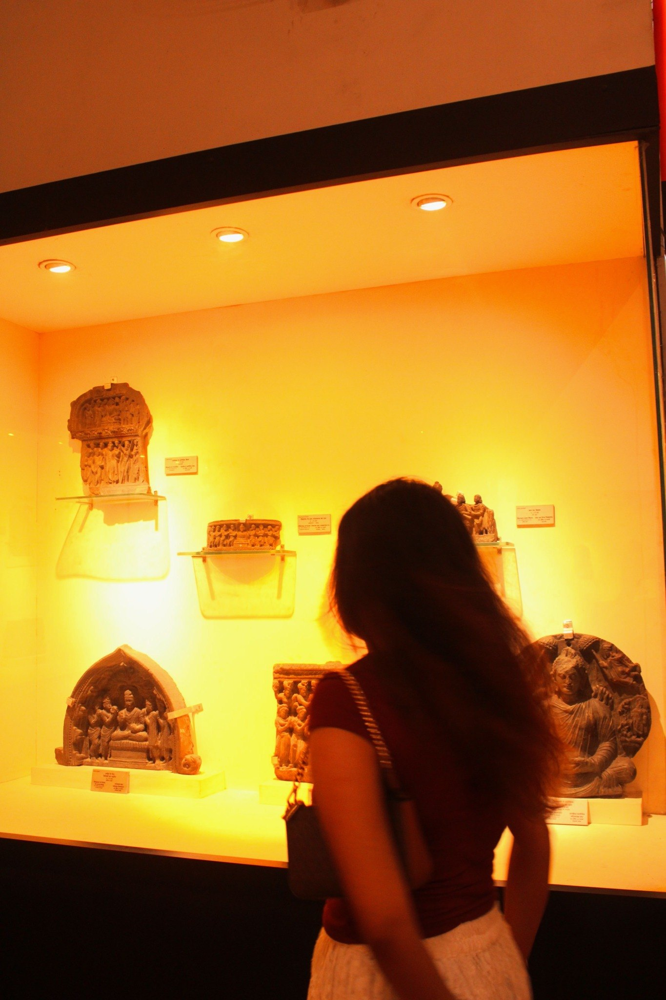
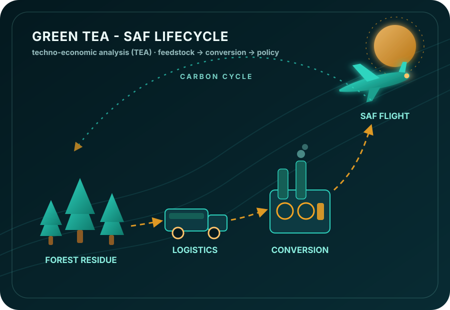
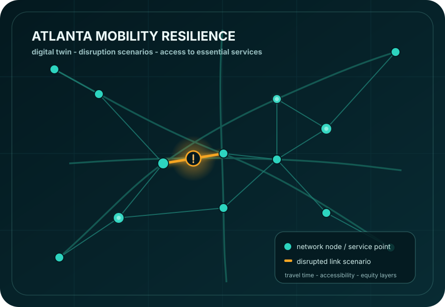
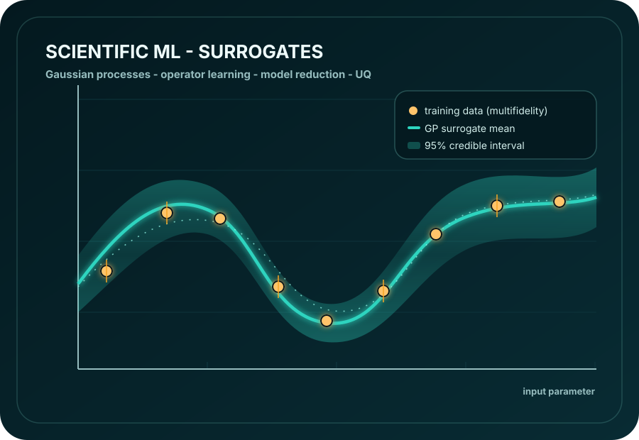
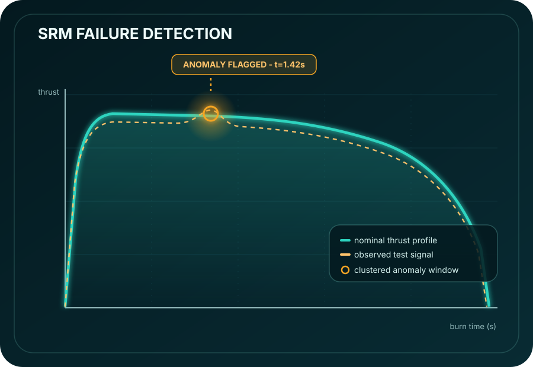

Vehicle
I started with the technology itself — advanced propulsion, alternative energy architectures, and quieter, cleaner vehicle design.
Sustainable transportation · Mobility resilience · Scientific ML
I am a PhD student in Aerospace Engineering at Georgia Tech’s Aerospace Systems Design Laboratory, working across emissions modeling, mobility resilience, digital twins, uncertainty quantification, and data-driven decision tools.
My research began in aerospace systems and aviation technology. The questions I keep returning to are wider: how transportation systems become sustainable, who benefits from them, and how models can support decisions without hiding their assumptions.

data
models
networks
people

Research direction
My work has approached transportation sustainability from the technology side — aviation fuels, lifecycle emissions, uncertainty analysis, and decarbonization policy. I am now building toward research that also asks how mobility systems shape accessibility, environmental outcomes, resilience, and equity.
The connective thread is systems thinking: understanding how assumptions, networks, technologies, and human use interact to produce outcomes that matter for both performance and public decisions.
Throughline
I started with the technology itself — advanced propulsion, alternative energy architectures, and quieter, cleaner vehicle design.
Studying sustainable aviation fuels widened the question: where energy comes from, how it moves, and what its true carbon cost is.
Lifecycle and techno-economic analysis taught me to connect technical choices with policy targets, costs, and real-world constraints.
Now I ask how disruptions to transportation networks affect access to jobs, healthcare, and essential services across communities.
Featured work

01 · LCA / TEA / decarbonization
Systems analysis of a sustainable aviation fuel pathway: feedstock collection, transport logistics, fuel conversion, carbon intensity, uncertainty, and policy-relevant aviation decarbonization questions.

02 · independent build
Prototype road-network model for disruption scenarios, travel-time comparisons, accessibility outcomes, and future equity/service-access layers.
View project →
03 · GitHub research track
NURBS-based BEM solver, multifidelity datasets, Gaussian process surrogates, POD feasibility, and first-principles surrogate-method studies.
View projects →
04 · AE8900 / time-series ML
Machine-learning exploration for thrust-profile time series, with feature extraction, clustering, validation, and careful interpretation of model behavior.
View case →Methods
I like methods that make models useful without pretending uncertainty, assumptions, or scale do not matter.
Lifecycle assessment, techno-economic analysis, carbon intensity, aviation decarbonization pathways, and uncertainty in sustainability metrics.
Network disruption scenarios, travel-time comparisons, accessibility outcomes, essential-service access, and resilience stress tests.
Surrogate modeling, Gaussian processes, multifidelity modeling, operator inference, model reduction, and physics-informed methods.
Regression, statistical inference, uncertainty quantification, time-series analysis, validation, and model interpretation.
Travel behavior modeling, spatial analysis, discrete choice models, accessibility modeling, and equity-oriented transportation metrics.
Ask researchable questions, work with imperfect data, keep scope honest, and connect technical models to decisions.
GitHub bio direction
This is the profile I am building: technical enough for scientific ML and digital-twin work, but grounded in transportation sustainability, accessibility, and resilience questions.
Beyond research
Making playlists, dancing, and painting keep me close to rhythm, texture, and storytelling — the same instincts I bring to systems work.
I build moods through sequencing — small transitions, memory, texture, and rhythm.
Movement keeps me attentive to timing, flow, and the way systems feel when they change.
Painting helps me slow down and notice composition, contrast, and visual structure.
Playlist moodboard
Music is part of how I remember phases of work: writing sprints, debugging sessions, long walks, and the feeling of starting something new.
Open Spotify ↗Find me